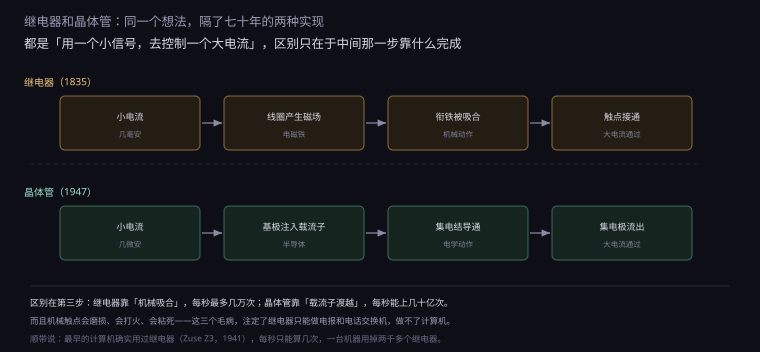
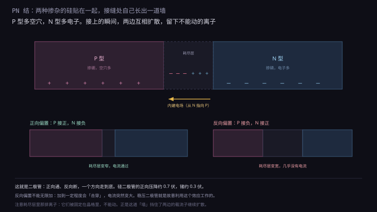
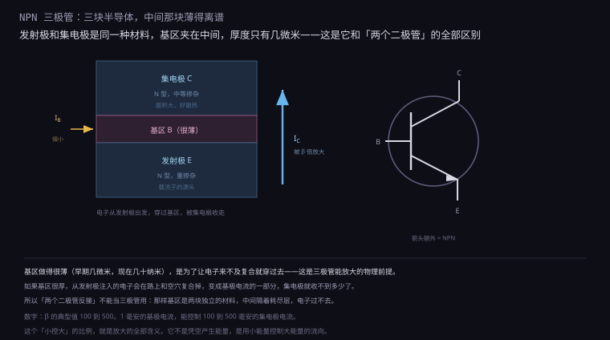
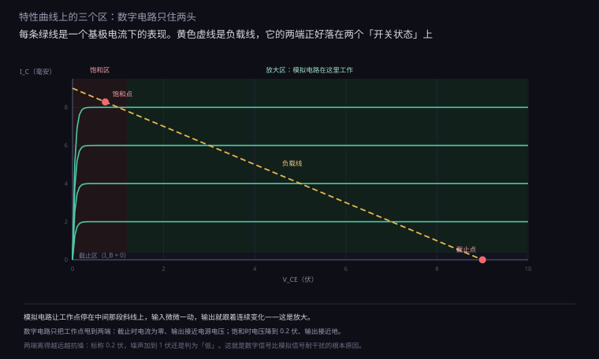
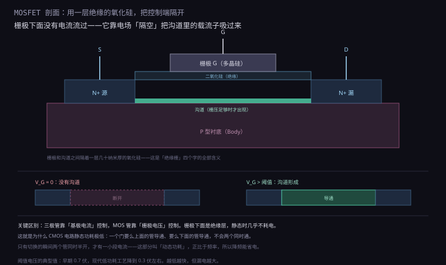
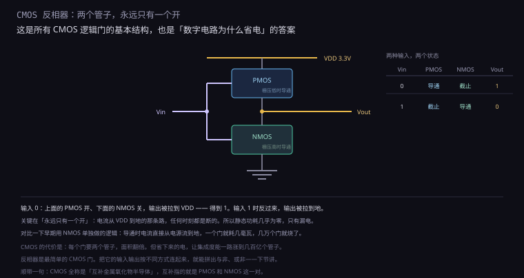

约 1.25 万字 · 6 张图 · 读完你能说清三极管为什么能放大、 MOSFET 和三极管差在哪、以及为什么 CMOS 电路几乎不耗电
先别急着进半导体。这个想法本身，比半导体古老得多。
1835 年，美国物理学家约瑟夫·亨利做了一个装置：把导线绕成线圈，通电， 线圈里产生磁场，把旁边一块铁片吸过来。铁片一动，就接通了另一条电路。
这就是继电器。它的意义不在于「能吸铁」，而在于： 用一个很小的电流，控制一个很大的电流。 线圈只需要几毫安就能吸合，而它控制的触点可以通断几安培。
这个「小控大」的能力，是所有开关器件的核心。因为它意味着信号可以被复制、被放大： 一个微弱的电报信号，经过一级继电器放大，可以再驱动下一级；串上几十级，就能从纽约传到旧金山。
图 1.2.1-1 把继电器和晶体管的逻辑并排放在一起。你会发现它们几乎是同一个流程。

区别全在第三格。继电器的「衔铁被吸合」是一个机械动作， 有质量、有惯性，每秒最多动作几百次（专门的簧片继电器能到几千次）。 而且触点会磨损、会打火、会粘死——通断几千次之后就不灵了。
晶体管的「集电结导通」是一个电学过程， 靠的是半导体里载流子的移动，没有机械部件，每秒能切换几十亿次， 而且只要不烧，几乎不会「磨损」。
这个差别有多大？算一下就知道。1941 年楚泽的 Z3 用了约 2000 个继电器， 每秒能做 3 到 4 次乘法，一次乘法要 3 秒。而今天一颗手机芯片里， 几百亿个晶体管每秒开关几十亿次。 从「每秒几次」到「每秒几十亿次」，中间隔的就是这个第三格。
第一只晶体管长什么样？说清楚它，能帮你理解「晶体管」这个词的来历。
它叫点接触式晶体管。结构是一块锗片，上面压着两根极细的金属针， 针尖离得很近（几十微米），分别接基极和集电极，锗片背面接发射极。
通电之后，针尖下面的锗里形成了两个靠得极近的 PN 结——中间那一小块就是「基区」。 因为两个结挨得太近，载流子能从一个穿到另一个，于是产生了放大作用。
这个结构非常难做：两根针要压到恰到好处的位置和压力，稍有偏差就失效。 所以它只能待在实验室，没法量产。
1950 年肖克利提出了结型晶体管（用两层 PN 结夹出基区）， 1954 年出现了平面工艺（用氧化、光刻、扩散在硅片表面做出结构）， 晶体管才真正变得可制造。今天所有的芯片，用的都是平面工艺的后代。
「晶体管」这个名字也有意思。英文 transistor 是 transfer（传递）和 resistor（电阻）的合成词—— 因为它做的事情，就是用一个小信号去改变一段材料的电阻。 这个名字比「放大」更准确：它不是放大能量，是改变电阻。
等一下——从 1835 年的继电器直接跳到 1947 年的晶体管， 中间跳过了整整一代器件。第一台电子计算机用的根本不是晶体管， 而是真空管。
1907 年，美国发明家德福雷斯特在真空二极管里加了第三个电极：栅极。 它是阴极和阳极之间的一张金属网，网上的电压能控制阳极电流—— 又是一个「小控大」，这次是在真空里完成的。 这就是三极真空管（triode），名字里的 tri 和后来三极管的「三」是同一个来源。
真空管比继电器快得多：没有机械惯性，阴极发出的电子渡越到阳极只要纳秒级。 于是有了第一个电子开关，于是有了第一代电子计算机。
| 计算机 | 年份 | 器件 | 数量 | 速度 | 毛病 |
|---|---|---|---|---|---|
| Z3（楚泽） | 1941 | 继电器 | 约 2000 个 | 每秒 3–4 次乘法 | 触点磨损 |
| ENIAC | 1946 | 真空管 | 约 18000 只 | 每秒 5000 次加法 | 每两天烧一只 |
| TRADIC | 1954 | 晶体管 | 约 700 只 | 每秒 100 万次 | 初期贵、参数散 |
ENIAC 占地 167 平方米、重 30 吨、耗电 150 千瓦—— 启动时费城的路灯都会暗一下。它的真空管平均每两天烧坏一只， 工程师上班第一件事是找出昨晚坏了哪几只管子。
把三行放在一起看，规律很清楚：每一代器件，都是在解决上一代的核心瓶颈。 继电器慢（机械惯性），真空管解决了速度，但真空管碎、烫、命短； 晶体管把同样的「小控大」搬进固体里，不碎、不烫（相对）、不磨损， 而且可以做成指甲盖大小的一整块。三代人做的其实是同一件事。
晶体管的核心是「PN 结」。要理解它，得先理解两种掺杂的硅。
纯硅是不导电的（准确说，导电性很差），因为它的四个价电子都和邻居配成了共价键， 没有自由电子可以移动。要让它导电，得掺入杂质：
| 掺杂元素 | 族 | 多出来的东西 | 叫法 |
|---|---|---|---|
| 磷、砷 | V 族（5 个价电子） | 一个自由电子 | N 型（负） |
| 硼、铝 | III 族（3 个价电子） | 一个「空穴」 | P 型（正） |
空穴不是一个真实的粒子，它是「少了一个电子」留下的空位。 但这个空位可以像正电荷一样移动——旁边的电子跳过来填上，空位就跑到旁边去了。 所以 P 型硅里，载流子是空穴；N 型硅里，载流子是电子。
现在把一块 P 型和一块 N 型贴在一起。会发生什么？图 1.2.1-2 是答案。

接触的瞬间，两边的载流子浓度差很大，于是互相扩散： P 区的空穴往 N 区跑，N 区的电子往 P 区跑。
但跑过去之后，它们会复合掉，留下不能动的离子： P 区这边留下带负电的受主离子，N 区那边留下带正电的施主离子。 这些离子固定在晶格里，跑不掉。
于是在接缝两侧，形成了一层「没有可动载流子、只有固定离子」的区域， 叫耗尽层（depletion region）。它的宽度大约零点几微米。
耗尽层里的离子产生一个内建电场，方向从 N 指向 P。 这个电场的作用是阻挡扩散——跑到一半的载流子会被推回去。 扩散和阻挡达到平衡时，耗尽层宽度就固定了。
这个平衡很重要，因为它解释了一个现象：什么都不接的时候，PN 结两端有一个电压。 硅大约 0.7 伏，锗大约 0.3 伏。这个电压叫「内建电势」，是那道墙的高度。
现在加上外部电压，有两种接法：
正向偏置：P 接正、N 接负。外电场和内建电场方向相反， 墙被削低，耗尽层变窄。窄到一定程度，载流子就能大量穿过——导通。
反向偏置：P 接负、N 接正。外电场和内建电场同向，墙被加高， 耗尽层变宽。载流子更过不去了——截止。
这就是二极管：一个方向通，一个方向断。 它是最简单的半导体器件，也是所有其他器件的起点。
掺杂这件事，工程上怎么做？不是「把磷撒进去」那么简单，因为要精确控制浓度和深度。
主流方法是离子注入：把磷或硼的原子电离，用电场加速到几十到几百千电子伏， 直接打进硅片表面。注入的深度由加速电压决定，浓度由束流大小和时间决定。 打完还要高温退火，让被撞乱的晶格恢复，同时让杂质原子进入该在的位置。
注入能量 30 keV → 硼的注入深度约 0.1 微米
注入剂量 1e15 /cm² → 浓度约 1e19 /cm³（重掺杂）
退火 1000°C / 30 秒 → 激活杂质，修复晶格这个过程能精确到什么程度？浓度误差可以控制在百分之几，深度误差几纳米。 没有这种精度，就做不出几十亿个参数一致的晶体管。
二极管本身也不只是「晶体管的一个零件」。它在电路里到处都是：
| 用途 | 怎么接 | 利用什么 |
|---|---|---|
| 整流 | 交流变直流 | 单向导通 |
| 稳压 | 反向击穿 | 击穿电压稳定 |
| 续流 | 并联在电感两端 | 给反向电流一条路 |
| 防反接 | 串在电源入口 | 接反了不通 |
| 发光 | 正向导通 | 电子空穴复合放光（LED） |
最后一行是 LED。它和普通二极管的结构一样，只是材料换成了砷化镓、氮化镓这些「直接带隙」半导体， 复合时能量以光子形式释放，而不是变成热。 同一个 PN 结，掺什么材料，就决定了它是整流器还是灯泡。
PN 结还有一个隐藏身份：电容。 耗尽层两侧是固定离子，一边正一边负，中间隔着没有载流子的区域—— 这就是一个电容器的结构。所以每个二极管都自带一个「结电容」。
这个电容有个特点：反偏越深，耗尽层越宽，电容越小。 间距越大电容越小，和平行板电容的规律一样。 于是出现了一种专门利用这个性质的器件——变容二极管： 用电压控制电容。老式收音机拧旋钮调台，调的就是它。
但在高速电路里，结电容是坏事。信号要翻转，得先给结电容充放电。 频率越高，这个负担越重。所以高速开关二极管都要把结面积做小—— 小面积意味着小电容，小电容意味着快开关。 这条逻辑链会一路贯穿到后面的 MOS 管。
再说反偏的另一件怪事。前面说反偏「截止」，但如果反偏电压一直加大， 加到某个值，电流会突然增大——击穿了。 击穿有两种机制，物理过程完全不同：
| 机制 | 击穿电压 | 物理过程 | 温度特性 |
|---|---|---|---|
| 齐纳击穿 | 低于约 5 V | 耗尽层极窄，电子直接「隧穿」过去 | 温度升高，击穿电压下降 |
| 雪崩击穿 | 高于约 7 V | 载流子被加速撞出电子空穴对，连锁反应 | 温度升高，击穿电压上升 |
雪崩击穿的画面感很强：一个电子在强电场里加速，撞上晶格原子， 撞出一个新的电子空穴对，现在有两个电子继续加速，再撞出四个…… 一颗雪球滚成雪崩。
关键是：击穿不等于坏。 只要外电路限流，不让电流无限增大，击穿是可逆的——撤掉电压，管子完好如初。 稳压二极管（齐纳二极管）就是故意工作在击穿区的： 击穿电压极其稳定，电流怎么晃，电压都钉在那个值上。 烧管子的从来不是「击穿」这个动作，是击穿之后不限流导致的热。
二极管有两个脚。如果在中间再夹一层，变成三明治结构，就有了三个脚—— 这就是三极管（BJT，双极型晶体管）。
两种夹法：N-P-N 和 P-N-P。先看 NPN，图 1.2.1-3。

三层分别是：发射极（E，重掺杂 N）、基区（B，薄 P）、 集电极（C，中等掺杂 N）。
注意两个 N 区的差别：发射极是重掺杂的，载流子浓度极高； 集电极是中等掺杂，面积大（为了散热）。这个不对称是有意的。
工作时的情形是这样的：
发射结（E-B）正偏，发射极的大量电子被注入基区。 基区很薄、掺杂很低，电子进去之后来不及和空穴复合， 大部分直接扩散到了集电结边缘。
集电结（B-C）反偏，但反偏的电场方向正好把电子「拉」过去。 于是这些电子穿过集电结，被集电极收走，形成集电极电流。
整个过程中，基极电流很小——它只是补充那些在基区复合掉的电子。 而集电极电流大得多。两者的比值就是电流放大系数 β：
I_E = I_B + I_C （基尔霍夫电流定律，三个脚）
I_C = β × I_B （β 的典型值 100–500）
例：I_B = 1 mA，β = 200
I_C = 200 mA
I_E = 201 mA1 毫安的基极电流，控制 200 毫安的集电极电流。这就是「放大」。
但马上要泼一盆冷水：β 不是一个可靠的数字。 同一个型号的管子，手册上写 β 是 200，实际拿到手可能是 100，也可能是 400—— 它随工艺批次、工作电流、温度大幅漂移，同一只管子冷机和热机的 β 都能差出一截。
所以模拟电路有一条铁律：任何依赖 β 具体数值的设计，都是坏设计。 正确的做法是让电路只依赖「β 足够大」这个事实，再负反馈把多余增益吃掉。 比如 R_E（发射极电阻）负反馈：I_C 想增大，R_E 上的压降升高， V_BE 被顶低，I_C 又被压回去——增益由两个电阻之比决定，β 漂移几十个百分点都无所谓。
记住这件事，下一节会看到它的好处：数字电路干脆放弃了 β 的数值， 只用「基极电流给足，管子必进饱和」这个定性事实。 工程师的第一课不是精确计算，是识别哪些参数不值得信任。
但这里必须说清一件事：三极管不产生能量，它只是控制能量的流向。 那 200 毫安不是从基极「变」出来的，是从电源经过集电极流下来的。 基极做的只是「开闸」——闸开多大，水流多大。
所以更准确的说法不是「放大」，而是「用小信号控制大信号」。 英文里 amplifying 和 switching 是两个词，中文都翻成「放大」， 容易让人以为能量被凭空放大了。
三极管在电路里有三种接法，取决于哪个脚是「公共端」：
| 组态 | 公共端 | 输入 | 输出 | 特点 |
|---|---|---|---|---|
| 共射极 | 发射极 | 基极 | 集电极 | 电压和电流都放大，最常用 |
| 共集电极 | 集电极 | 基极 | 发射极 | 电压增益≈1，电流放大，做缓冲 |
| 共基极 | 基极 | 发射极 | 集电极 | 电压放大，高频特性好 |
最常用的是共射极。它的输出是反相的：输入升高，集电极电流增大， 集电极电阻上的压降增大，于是输出（集电极电压）反而下降。 「反相」这个性质，正好是逻辑门需要的——一个三极管就是一个非门。
共集电极又叫「射极跟随器」，输出电压跟着输入走，只差 0.7 伏。 它不放大电压，但能提供很大的电流驱动能力，所以常放在输出级当缓冲。
有了放大能力，怎么用它做逻辑？答案是：不用中间那段，只用两头。
图 1.2.1-4 是 NPN 的输出特性曲线。横轴是 C-E 之间的电压，纵轴是集电极电流。 每条绿线对应一个基极电流。

曲线分成三个区：
截止区：基极电流为零，集电极电流几乎为零（只有纳安级的漏电）。 管子像断开的开关。
放大区：曲线平坦，集电极电流只由基极电流决定，与 C-E 电压无关。 这就是「恒流源」特性，也是放大的工作区。
饱和区：C-E 电压很低（0.2 伏左右），即使再增加基极电流， 集电极电流也不再增加。管子像闭合的开关。
模拟电路让工作点停在放大区的中间，输入的小变化会被线性放大。 数字电路直接把工作点甩到两端：
输入低 → 截止 → I_C ≈ 0 → 输出被上拉电阻拉到 VCC → 逻辑 1
输入高 → 饱和 → V_CE ≈ 0.2V → 输出被拉到地 → 逻辑 0这么做的好处，不只是「简单」，而是抗干扰。
假设电源是 3.3 伏。截止时输出接近 3.3，饱和时接近 0.2。 两者相差 3.1 伏。如果线上串进 1 伏的噪声：
3.3V + 1V 噪声 = 4.3V → 还是判为「高」
0.2V + 1V 噪声 = 1.2V → 还是判为「低」（阈值通常在 1.65V）噪声要大到 1.6 伏以上才会判错。而模拟信号本来就是连续的， 任何一点噪声都会原样叠加到输出上，无法「重新判定」。
「多高算高、多低算低」这件事，行业里是有标准的。不同年代、不同工艺，标准不一样：
| 标准 | 电源 | 判为低 | 判为高 | 年代 |
|---|---|---|---|---|
| TTL | 5 V | < 0.8 V | > 2.0 V | 1960s–1980s |
| LVTTL | 3.3 V | < 0.8 V | > 2.0 V | 1990s |
| LVCMOS | 1.8 V | < 0.3 × VDD | > 0.7 × VDD | 2000s |
| 现代 SoC | 0.6–1.0 V | 按比例 | 按比例 | 现在 |
注意 TTL 那一行：5 伏电源，但只要求「高于 2.0 伏算高、低于 0.8 伏算低」。 中间 0.8 到 2.0 这一段是不确定区，谁也不保证。
这段空隙叫噪声容限。它告诉你：信号上叠多大的噪声还不至于判错。 低电平的容限是 0.8 − 0.2 = 0.6 伏，高电平是 5.0 − 2.0 = ... 实际按驱动器的最差输出算，约 0.4 伏。
驱动器输出低：最差 0.4 V
接收器判低上限：0.8 V
噪声容限 = 0.8 − 0.4 = 0.4 V
驱动器输出高：最差 2.4 V
接收器判高下限：2.0 V
噪声容限 = 2.4 − 2.0 = 0.4 V0.4 伏的容限听起来不多，但相对于 5 伏的信号，已经是 8%。 而且这个容限是每一级重新获得的——信号传过一级门，就被重新整形到标准电平， 之前的噪声全部清零。 这就是数字信号能传很远的原因：噪声不会累积，只会被反复削掉。
顺带说一个工程细节：为什么饱和压降是 0.2 伏而不是 0？因为饱和时管子内部还有一点点电阻， 电流流过就有压降。这个 0.2 伏乘以电流，就是管子的导通损耗。 在大功率场合，这个损耗会变成热，这也是为什么功率器件要专门设计。
那么这个「开关」到底能开多快？这决定了一台计算机的主频。
衡量快慢的参数叫传播延迟：输入翻转之后，输出跟着翻转所需的时间。 单个晶体管开关一次只要几皮秒（1 皮秒 = 万亿分之一秒）。 但芯片里没有「单个管子干活」这回事—— 一个信号要穿过几十个门组成的逻辑链，一级一级传下去。
单级门延迟（现代工艺） ≈ 5–20 皮秒
3 GHz 时钟的一个周期 = 1000 ÷ 3 ≈ 333 皮秒
333 ÷ 15 ≈ 20 级
结论：3 GHz 的芯片里，一条路径最多串二十级左右的门。
再多，一个时钟周期内就算不完，必须拆成两拍。再加上布线延迟——信号在导线上传播也要时间，几毫米的线能吃掉几十皮秒， 有时候线比门还慢。所以芯片设计师的一项日常工作，就是数每一拍里串了多少级门、走了多长的线。 主频不是「想定多高就多高」，是拿门延迟和线延迟一笔一笔算出来的。
单管的速度上限有个专门参数：特征频率 f_T—— 电流增益降到 1 时的频率。现代晶体管的 f_T 在几百 GHz， 逻辑电路只用它的十几分之一，因为要留余量给级联、给负载、给温度变化。 这个「物理上限很高、工程只敢用一小截」的格局，会反复出现。
三极管很好用，但它有一个天生的缺点：控制端要持续消耗电流。
基极电流虽然小，但一直流着。一个芯片里如果有十亿个三极管同时导通， 光是基极电流就能烧掉整个芯片。所以三极管做不了大规模集成电路。
解决方案是另一种器件：MOSFET（金属氧化物半导体场效应管）。 它的控制端不流电流，只加电压。

结构上，它像是一个「平面版」的三极管：在 P 型衬底上做两个 N+ 区（源极和漏极）， 中间留一段距离，上面盖一层极薄的二氧化硅，再上面是栅极。
关键在那个氧化层。它是绝缘体，厚度只有几纳米到几十纳米。 所以栅极和下面的硅之间没有电的连接，相当于一个电容的两个极板。
工作时，栅极加正电压。电场穿过氧化层，把衬底表面的电子「吸」上来， 在源极和漏极之间形成一条沟道。沟道一通，电流就能流过。
电压撤掉，电子散去，沟道消失，电流断开。 整个过程不需要栅极提供电流——只在切换的瞬间给电容充放电。
三极管（BJT）：控制量是电流 I_B，输入端一直耗电
MOS 管（FET）：控制量是电压 V_GS，稳态时不耗电（只有漏电和电容充放电）这个差别看似很小，实际巨大。它意味着：一个芯片上可以堆几十亿个管子， 而静态功耗几乎为零。
顺带说一个参数：阈值电压（V_th）。它就是「沟道刚好形成」的那个栅压。 早期工艺是 0.7 伏，现代低功耗工艺降到 0.3 伏左右。
阈值电压不能太高（否则驱动电压不够），也不能太低（否则关不严，漏电大）。 这是一个非常精细的权衡，后面的 1.2.1-8 会讲它为什么成了工艺进步的瓶颈。
MOS 管按「默认状态」分两类，按「载流子」分两种，组合起来是四种：
| 类型 | 默认 | 怎么导通 | 用在哪 |
|---|---|---|---|
| N 沟道增强型 | 关断 | 栅压高于阈值 | 数字电路的主力 |
| P 沟道增强型 | 关断 | 栅压低于阈值 | 数字电路的上拉 |
| N 沟道耗尽型 | 导通 | 栅压低于阈值才关 | 恒流源、老式 NMOS 逻辑 |
| P 沟道耗尽型 | 导通 | 栅压高于阈值才关 | 很少用 |
「增强型」的意思是：默认没有沟道，要靠栅压「增强」出来。 「耗尽型」的意思是：出厂就有沟道，要靠栅压把它「耗尽」掉。
数字电路几乎只用增强型，因为「默认关断」更安全——上电瞬间不会误导通。 耗尽型主要出现在模拟电路里，用来做恒流源。
这个区分在历史上很重要。1970 年代的 NMOS 逻辑，上拉用的就是一个栅极接自己源极的耗尽型管—— 它永远导通，充当一个电阻。这种电路能做，但一直耗电，就是前面说的那个问题。 CMOS 用增强型 PMOS 代替它，才有了「关得掉」的上拉。
MOS 管其实还有第四个电极，平时被偷偷接起来了：衬底（body）。 前面说过沟道是衬底表面被电场吸出来的电子层， 那衬底自身的电位当然也会影响这件事。
规律是：衬底相对源极的电压越负，阈值电压越高。 因为衬底电位把沟道里的电子往回推，栅极必须用更高的电压才能把它们重新吸上来。 这叫体效应（body effect）。
单管做实验时感觉不到它，因为衬底和源极总是接在一起。 但在芯片里，几千万个 NMOS 共用一个 P 型衬底，衬底统一接地， 而各管的源极电位各不相同——源极电位高于地的那个管，阈值就悄悄升高了。 设计者要么把它算进时序，要么干脆给这个管单独做一个「局部衬底」。 一个被忽略的第四脚，能吃掉百分之十几的速度。
再算一笔账，感受一下栅极那层氧化硅有多薄。 栅电容的公式就是平行板电容：C = ε × A / d。 氧化层厚度 d 是工艺节点数量级的十分之一——在 3 纳米工艺上只有一两纳米， 相当于五六个原子叠在一起。 再薄几个原子，电子就会直接隧穿过去，绝缘层变成「漏层」。 这就是为什么后面的工艺要改用「高介电常数」材料（二氧化铪）替二氧化硅： 换材料加厚 d 而电容不变，堵住隧穿。
单个 MOS 管不耗电，不等于电路不耗电。真正让数字电路省电的，是配对使用的方法。
这个方法叫 CMOS（互补金属氧化物半导体），互补指的就是 PMOS 和 NMOS 这一对。 图 1.2.1-6 是最基本的单元：反相器。

上面是 PMOS，源极接 VDD；下面是 NMOS，源极接地。两个的栅极连在一起， 当输入；两个的漏极连在一起，当输出。
输入 0（低电平）时：PMOS 的栅压低于源极，导通；NMOS 的栅压为 0，截止。 输出通过 PMOS 接到 VDD——得到 1。
输入 1（高电平）时：PMOS 截止，NMOS 导通。输出通过 NMOS 接到地——得到 0。
这就是反相器：输入 0 出 1，输入 1 出 0。数据上是「非」， 电路上是「永远只有一个管子开」。
对比一下早期的 NMOS 逻辑。那时候只有 NMOS，上拉用一个电阻或者一个常开的耗尽型管子。 输入为低时，下拉管关断，但上拉还在通电——电流从电源一直流到地， 一个门就耗几毫瓦。
NMOS 逻辑：上拉电阻常通，输出低时静态电流 = VDD / R
1000 个门 × 2 mW = 2 W，散热就成问题了
CMOS 逻辑：稳态时上下总有一个关断，静态电流 ≈ 漏电
1000 个门 × 0.001 mW = 1 mW，几乎可以忽略这个差别，直接决定了集成电路能集成多少个门。 1970 年代用 NMOS 的芯片，集成几千个门就到散热极限了； 换成 CMOS 之后，集成度才一路涨到今天的几百亿个晶体管。
但 CMOS 也不是完全不耗电。先插一句和功耗直接相关的事：温度。
半导体对温度极其敏感。温度升高，本征载流子增多、载流子迁移率下降、 漏电指数级上升、阈值电压漂移——几乎每个参数都往坏的方向走。 更麻烦的是这构成一个恶性循环：漏电大 → 发热多 → 温度更高 → 漏电更大。 不加约束，管子会在几毫秒内热失控烧毁，行话叫「热奔」（thermal runaway）。
所以每一颗现代芯片里都有几十个温度传感器， 固件盯着它们：一到阈值就降频、降压、风扇拉满。 你以为的「CPU 睿频 5 GHz」，其实是「在温度允许的窗口内冲到 5 GHz」—— 频率从来不是电学问题决定的，是热的预算决定的。
回到功耗本身。CMOS 的功耗分三部分：
| 功耗类型 | 何时产生 | 正比于 | 怎么降 |
|---|---|---|---|
| 动态功耗 | 切换时给栅极电容充电 | P = C × V² × f | 降电压、降频率 |
| 静态功耗 | 关断时漏电 | 与工艺、温度有关 | 提高阈值电压、降温度 |
| 短路功耗 | 切换时两个管子半开 | 与切换频率成正比 | 让边沿更陡 |
第一行那个公式很重要：P = C × V² × f。 功耗正比于电压的平方、正比于频率。这就是为什么降频能省电、 降压能省更多电——电压从 1.2 伏降到 1.0 伏，功耗降到原来的 69%。
也是为什么 CPU 的「睿频」是有代价的：频率上去了，功耗按比例上去， 温度跟着上去，然后被迫降回来。这个循环叫「热墙」。
这里有一段很有意思的历史。1974 年，IBM 的登纳德提出了一个观察： 晶体管尺寸每缩小一代，如果电压也按比例降，那么单位面积的功耗保持不变。
这个规律叫登纳德缩放（Dennard scaling）。它解释了为什么从 1980 年代到 2005 年， 主频能从几兆赫一路涨到几吉赫，而散热问题没有爆发——因为电压跟着降，功耗没涨。
尺寸缩小到 1/k，电压也降到 1/k：
电容 C ∝ 1/k
电压 V ∝ 1/k
频率 f ∝ k（因为沟道短了，开关更快）
功耗 P = C·V²·f ∝ (1/k)·(1/k²)·k = 1/k²
单位面积的门数 ∝ k²，单个门功耗 ∝ 1/k²
两者相乘 = 常数，功率密度不变但 2005 年前后，这条路断了。原因是阈值电压不能再降： 降得太低，关断时的漏电会指数级上升，静态功耗反而失控。
电压降不下去，尺寸还在缩，功率密度就开始飙升。这就是「功耗墙」： 主频停在 3 到 4 吉赫十几年没动，厂商转向多核。 不是不想更快，是散热撑不住。
第三行「短路功耗」值得单独说。理想情况下，输入从 0 变到 1 是瞬间完成的， 两个管子不会同时开。但实际信号有上升时间，在这段时间里， PMOS 还没完全关、NMOS 已经开始开，两个同时半导通——电源到地有一条短暂的短路。
这个电流不大，但频率高了就积少成多。所以芯片设计里要尽量让信号边沿陡， 就是为了缩短这个「同时半开」的时间窗。
说到边沿，有一个所有数字设计者天天挂在嘴边的词：扇出（fanout）。 一个门的输出，能接几个下一级门的输入？
每个下一级门，对上级来说都是一个栅电容负载。 接得越多，总电容越大，同样的驱动电流下，边沿就越缓—— 缓到一定程度，翻转时间超过预算，电路就达不到目标频率。 所以扇出不是「接得通」的问题，是「翻得快」的问题。
扇出 = 驱动电流 ÷ 下一级输入电容的充电电流需求
扇出 4：边沿正常，一拍内稳稳翻转
扇出 20：边沿拖长，到达时间推迟，时序开始紧张
扇出 100：边沿缓成斜坡，短路窗口拉长、噪声容限被吃掉实际设计里，时钟频率不高的场合扇出可以放宽到十几， 高速路径则要控制在个位数。扇出太大了怎么办？ 插一级缓冲器——两个反相器串起来，逻辑上等于没接， 驱动能力翻了几倍。芯片里到处都是这种「逻辑上不存在、物理上必需」的缓冲， 它们不改变任何 0 和 1，只是把电平搬得更远。 数字电路里有一半的管子在做逻辑，另一半在搬运逻辑。
半导体材料不止硅一种。锗、砷化镓、碳化硅、氮化镓，都能做晶体管。 但整个数字时代建立在硅上，原因有四条。
第一，储量。硅是地壳里第二多的元素（占 27.7%，第一是氧 46%）。 沙子、石头、泥土里全是硅。原料几乎不要钱。
第二，氧化物天然好用。这是最关键的一条。硅氧化之后变成二氧化硅， 致密、稳定、绝缘性极好，而且能通过热氧化直接在硅表面长出来， 界面缺陷极少。
这一条有多重要？MOS 管的栅极氧化层就是它。没有高质量的氧化层， MOS 管就做不出来。而其他半导体（比如锗）的氧化物是溶于水的， 根本没法当绝缘层用。
第三，能隙合适。硅的禁带宽度是 1.12 eV，锗是 0.67 eV。 禁带越窄，越容易被热激发产生漏电流。锗管在 85 摄氏度就开始失控， 硅管能扛到 150 甚至 200 度。
| 材料 | 禁带宽度 | 迁移率 | 氧化物 | 用在哪 |
|---|---|---|---|---|
| 硅 Si | 1.12 eV | 1400 | SiO₂，优良 | 数字芯片 |
| 锗 Ge | 0.67 eV | 3900 | 溶于水 | 早期晶体管 |
| 砷化镓 GaAs | 1.42 eV | 8500 | 没有 | 射频、光通信 |
| 碳化硅 SiC | 3.26 eV | 900 | SiO₂，可用 | 电动车功率器件 |
| 氮化镓 GaN | 3.4 eV | 2000 | 没有 | 快充、LED |
看第四列：只有硅和碳化硅有可用的氧化物。碳化硅的禁带太宽（3.26 eV）， 做逻辑门需要很高的电压，只适合功率器件。所以逻辑芯片只有硅一个选择。
砷化镓的电子迁移率是硅的六倍，速度快得多。但它没有绝缘氧化物， 做不了 MOS 管，只能做三极管；而且晶圆贵、脆、难做大。 所以它只用在射频和光通信这些「不计成本」的地方。
第四，工艺成熟。这是七十年积累出来的护城河。 从 1954 年第一只硅管，到今天的 3 纳米工艺， 整个产业链（提纯、拉晶、光刻、蚀刻、掺杂、封装）都是围绕硅建立的。 换材料不是不行，是要重建整条产业链。
这块「最精确的东西」是怎么从沙子里变出来的？三步。
第一步，电弧炉粗提纯。沙子（二氧化硅）和焦炭一起扔进电弧炉， 在 2000 摄氏度下还原出纯度约 98% 的冶金级硅。 这一吨几百块，便宜，但杂质太多，只能拿去炼铝合金。
第二步，西门子法精提纯。把粗硅和盐酸反应生成三氯硅烷（气体）， 反复蒸馏——液体的沸点差把杂质一层层剥掉， 最后在高温氢气里还原，得到电子级多晶硅，就是九个 9 的那坨。 化工行业的精髓在这一步：提纯不是「把硅弄纯」，是「让杂质跑掉」。
第三步，拉单晶。多晶硅是无数小晶体乱挤在一起，晶向乱、缺陷多， 不能直接做芯片。柴可拉斯基法是这样干的： 把多晶硅在石英坩埚里熔化（1420 摄氏度）， 垂直插入一颗拇指大的籽晶，一边旋转一边缓慢往上提—— 熔硅顺着籽晶的晶向一层层「接着长」，提出来一根完整的圆柱形单晶硅锭。 长晶的速度大约每小时一两厘米，一根合格的晶锭要拉好几天。
然后切片、磨边、抛光到镜面，就是照片里那种亮得能当镜子的黑色圆片——晶圆。 所有芯片都是在这种圆片上一批一批做出来的，做完再切开。 直径从当年的 50 毫米一路加到现在的 300 毫米：圆片越大，一批切的芯片越多， 单颗成本越低。大圆片是纯经济账，不是技术账。
数字最能说明问题。一根头发丝的直径大约是 80 微米。 如果按 3 纳米工艺的晶体管尺寸算：
80 微米 = 80000 纳米
80000 ÷ 3 ≈ 26000
一根头发丝的横截面上，能放下两万六千个晶体管。但这只是「横着排」。实际上晶体管是分层做在硅片表面的， 真正的高密度靠的是二维铺开加上多层金属互连。
所以更直观的对比是数量：一颗 Apple M2 Ultra 有 1340 亿个晶体管， 面积约 800 平方毫米。平均下来每平方毫米 1.7 亿个。
一片 300 毫米的晶圆，面积约 7 万平方毫米，能切出几十颗这样的芯片。 一颗芯片卖几千块，一片晶圆值几十万——这就是为什么晶圆厂的投资以百亿计。
尺寸缩小的好处，不只是「同样面积放更多」。 还有两个更重要的：
第一，更快。管子小了，栅极电容小了，充放电快了， 开关速度就上去了。
第二，更省电。电容小了，每次切换消耗的能量（½CV²）也小了。 所以同样运算量，新工艺的功耗更低。
这两个好处合起来，就是摩尔定律的物理基础：每 18 到 24 个月， 同样价格能买到的算力翻一倍。
但这条路正在变难。管子小到几个纳米之后，出现了几个麻烦：
| 问题 | 原因 | 对策 |
|---|---|---|
| 短沟道效应 | 沟道太短，栅极控制不住 | FinFET、GAA 环绕栅 |
| 漏电增大 | 阈值电压被迫降低 | 提高 V_th，牺牲速度 |
| 散热困难 | 功率密度上升 | 降频、多核、液冷 |
| 光刻极限 | 波长不能再短 | EUV、多重曝光 |
第一行的 FinFET 值得说一句。沟道太短时，栅极从上面「压不住」电子， 所以把沟道做成一片竖起来的「鳍」，让栅极从三面包住它。 再往后是 GAA（全环绕栅），栅极从四面全包住。 结构从平面变立体，是尺寸逼近物理极限后的必然选择。
最后一行「光刻极限」值得展开讲，因为它是整条产业链里最贵、最难的一环。
芯片的做法是「印」出来的：在硅片上涂一层感光胶， 用光透过一块画好电路图的掩模版去照，被照到的胶洗掉，图形就留在了硅片上。 能印多小的图形，由光的波长决定—— 这就是光刻，原理和洗照片一个思路，难度差了七个数量级。
困境在这里：印小图形需要短波长，而业界用了二十年的深紫外光 （193 纳米，氩氟准分子激光器），波长比要印的线条宽了五倍。 工程师是怎么用 193 纳米的光印出 40 纳米的线条的？ 答案朴实得吓人：在镜头和晶圆之间灌一层水。 水的折射率是 1.44，等效把波长缩短到 134 纳米； 再配合多次曝光（把一张密集图形拆成几次轮流印）， 硬是又撑了三代工艺。这叫浸润式光刻，2005 年前后是它的天下。
再往下走，水也救不了了，必须换光源。 新一代叫 EUV（极紫外）：把液态锡滴打成等离子体， 让它发出 13.5 纳米的光。全世界只有一家公司（荷兰阿斯麦）能造这种机器， 一台 1.5 亿美元起步，重 180 吨，锡滴每秒被激光击打五万次， 光路全程真空——因为 13.5 纳米的光连空气都穿不过。 芯片是印出来的，而印刷机本身是人类工业的塔尖。
把管子变难的路都走完之后，行业换了个方向：既然「缩」和「印」都贵了， 那就往「叠」和「拼」上想办法。
叠，是 3D 堆叠。内存早就在这么干了—— DDR5 和 HBM（高带宽内存）就是把多层裸片像扑克牌一样摞起来打孔互连， 单位面积容量直接翻几倍。逻辑芯片也开始叠：缓存压在 CPU 正上方， 信号垂直走几微米，比横穿半颗芯片快一个数量级。 平面摊不下了，就向天上要地。
拼，是小芯片（chiplet）。以前一颗 CPU 是一整块硅， 工艺缺陷导致良率随面积指数级下跌——面积翻四倍，良率可能跌到十分之一。 现在把大芯片拆成几颗小芯片（CPU 核一颗、缓存一颗、输入输出一颗）， 各自用最合适的工艺制造，再在封装里拼起来。 坏了换其中一颗，良率和成本都活了。 厂商卖的是「积木」，你买到的处理器是拼装货—— 这不是偷工减料，这是把摩尔定律的账换了一种算法。
所以摩尔定律死了吗？按原始表述——「同样价格，晶体管数量每两年翻倍」—— 确实慢下来了，从两年变成三四年甚至更久。 但换一套指标看：同样价格买到的晶体管、同样功率跑出来的算力， 这两条曲线还在往上走，只是斜率降了、动力换了。 定律会过时，「往单位成本里塞更多开关」这个方向，七十年没变过。
回到图 1.2.1-6 那个反相器。它已经是一个逻辑门了：输入 0 出 1，输入 1 出 0， 这就是「非」运算。
再多加几个管子，就能拼出其他门：
| 门 | 管子数 | 逻辑 | 怎么搭 |
|---|---|---|---|
| 非门 NOT | 2 | 输出 = 非输入 | 一个 PMOS 一个 NMOS |
| 与非门 NAND | 4 | 输出 = 非（A 且 B） | 两个 PMOS 并联 + 两个 NMOS 串联 |
| 或非门 NOR | 4 | 输出 = 非（A 或 B） | 两个 PMOS 串联 + 两个 NMOS 并联 |
| 与门 AND | 6 | 输出 = A 且 B | NAND 后面接一个 NOT |
为什么 AND 要六个管子？因为 CMOS 天然实现的是「反」的逻辑—— NMOS 串起来是「与」，但它输出的是「非」。 所以任何正逻辑都要在后面补一个反相器。
这也是为什么芯片设计里大量使用 NAND：它是「反逻辑」里最直接的那个， 管子最少、速度最快。而 NAND 又是「完备」的—— 只用 NAND 就能搭出所有其他逻辑门。
NOT(A) = NAND(A, A)
AND(A, B) = NOT(NAND(A, B))
OR(A, B) = NAND(NOT(A), NOT(B))
XOR(A, B) = NAND(NAND(A, NAND(A,B)), NAND(B, NAND(A,B)))这条性质在工程上极其重要。它意味着：芯片厂只需要把一种门做到极致， 整个数字世界就能从它长出来。
讲一个立刻用得上的组合技巧：传输门。 把一个 NMOS 和一个 PMOS 并联，两个栅极加相反的控制信号—— NMOS 擅长传 0（低电平传得干脆），PMOS 擅长传 1，凑一对，什么都能传。 它像一个小小的「电控开关」，控制端给信号就通，不给就断， 导通时输出几乎等于输入。这等于在「与或非」这些会算逻辑的门之外， 多了一种「只会传话」的门。
有了它，就能搭出「多选一」的电路：几路信号各接一个传输门， 控制信号只打开其中一路，输出就是那一路的值。 数据选择器（多路复用器）最底层就是这么干的，后面讲 CPU 里的寄存器堆时还会遇到它。
最后把镜头拉远，看芯片设计师实际怎么工作。 没有人从单个晶体管开始画——那是一个几百亿个零件的迷宫。 行业的做法是标准单元库：芯片厂把几十种常用的小电路 （反相器、与非门、多路复用器、触发器）预先设计好、测试好、 规定好每个的高度和接口位置，像一排尺寸统一的积木。 设计师拿 EDA 软件把这些积木摆到版图里，软件自动算时序、自动布线。 晶体管是砖，标准单元是预制板，芯片是整栋楼。 从本节到 1.2.4 讲的，都是「砖」这一层； 「楼」的搭法，属于后面的章节。
下一节从这几张真值表出发，把与、或、非、与非一个个拆开， 顺便讲清「为什么芯片设计者偏爱与非门」这件事。
这一节的核心只有一个词：小控大。 继电器用线圈、三极管用基极电流、MOS 管用栅极电压， 三代器件做的是同一件事，区别在于用什么物理过程去实现它。
三极管靠载流子渡越：发射极注入电子，基区薄到来不及复合， 集电极把它们收走。β 就是「收走的」和「注入的」之比。
MOS 管靠电场感应：栅极隔着一层氧化硅，用电场把载流子吸到表面， 形成沟道。栅极不流电流，所以稳态不耗电。
CMOS 把两种 MOS 管配对，让电源到地永远有一条断掉的路。 静态功耗降到漏电级别，这是集成电路能堆到几百亿管子的前提。
而这一切的物理基础，是硅这个材料的三条性质： 储量丰富、氧化物天然优良、禁带宽度合适。 三条缺一条，数字时代可能就不是今天这个样子。
最后一句话：晶体管本身不「计算」任何东西。 它只会做一件事——用一个小信号，控制一个更大的信号。 计算是这些开关连成网络之后，涌现出来的行为。
1. 区别在第三步：继电器靠机械触点吸合（有惯性、会磨损），晶体管靠载流子渡越（无机械部件、每秒几十亿次）。
2. 两边的载流子互相扩散，复合后留下不能移动的固定离子，形成没有可动载流子的区域。离子固定在晶格里，所以不能动。
3. 正向偏置时外电场与内建电场相反，耗尽层变窄；反向偏置时同向，变宽。
4. 因为两个独立二极管中间隔着厚材料，载流子走不了多远就复合了。三极管能工作靠的是基区极薄，这是工艺不是结构。
5. β = I_C / I_B，是集电极电流与基极电流之比。三极管只是控制电源能量的流向，不产生能量。
6. 因为两端电平差距大、抗干扰强，而且每一级都会把信号重新整形到标准电平。放大区是连续的，噪声会原样传下去。
7. 三极管靠电流控制（基极一直耗电），MOS 管靠电压控制（栅极隔着绝缘层，稳态不耗电）。这决定了能不能大规模集成。
8. 因为输入要么高要么低，PMOS 和 NMOS 总有一个关断，电源到地没有通路。功耗主要来自切换时给栅极电容充放电（P = C×V²×f）。
9. 因为砷化镓没有可用的绝缘氧化物，做不了 MOS 管；而且晶圆贵、脆、难做大。硅的 SiO₂ 能直接在表面热氧化生长，界面质量极好。
10. 指的是「等效密度」的营销名称，不是实际尺寸。台积电 3nm 的栅极长度约 12–16 纳米。